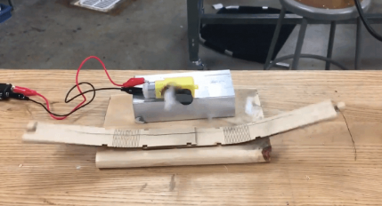

I designed everything on here, including the site! Click on the images to learn more about each project.
Design Engineering Instructor for United Technologies for Kids
Purpose
In Peru, as part of the second cohort sent by the United Technologies for Kids (a Peruvian NGO), I went to Chincha, a city in the Ica province, to start a makerspace with a partner. There, at the Colegio of Santa Maria I taught a variety of design engineering concepts including Arduinos, 3D printing, soldering, and more. Every day for three weeks, I taught kids from 7th grade to 12th grade for two hours in primarily Spanish.
Process
Throughout the Spring 2017, I worked with a team to create an Arduino and 3D curriculum. I was tasked with leading the Arduino side, so I created a teaching plan that began with the basics of electronics and then progressed into Arduino sensing and finally Arduino actuation. I incorporated Fritzing diagrams and extended activities with LED displays and motors to help familiarize students with circuits. You can see the examples of the slides here. Their first drafts were based off of labs I had done in the fall 2016 offering of Tangible User Interfaces, a graduate class taught by professor Kimiko Ryokai and graduate student Noura Howell. I owe them a huge amount of thanks for being part of the butterfly effect that changed my life.

When I arrived in Peru, my days revolved around preparing for our
taller, or workshop. My host family would drop off my partner Ryan and I at the colegio with their kids, and we would spend our mornings and early afternoons translating and editing our workshop lesson plans. We taught kids how to read engineering diagrams to create light sabers, hack their own water ionization conductivity probes, and diffuse 3 red, green, and blue LEDs under 3D-printed luminaires.
Implementation
1.0 Intro to the fundamentals of programming and logic through Processing-esque code.
Slides here.
1.1 Introduction to Arduino style programming and circuits
1.2: Introduction to Arduino as input (potentiometers, the serial monitor, buttons).
Slides here.
1.3: Circuits catch up day, electronics basics
1.4: Circuits for force-sensitive resistors, photoresistors, piezo speakers [Created a theremin]
2.0: Intro to CAD, generating excitement around 3D printing
2.1: Teaching advanced principles of CAD (patterns, lofting)
2.2: Teach Simplify 3D (the printer we brought over) and how to run it, Engineering Diagrams
2.3: Finish engineering diagrams, demo drones (we brought over a Phantom Dji 3, which allowed us to take this great shot)
3.0 Return to motor circuits
3.1 Water conductivity lab, final project brainstorming
3.2 Final project assistance
3.3 Future implications of making
*The way the curriculum was actually executed didn't exactly follow this order tooth-and-nail, but this is a rough sketch of the content we packed into our
taller.
Photos


On June 7th (which happened to be my 20th birthday, we were all whisked to Lima to present at an educational fair. Our students took their projects and labwork to demonstrate their progress and meet the other freshly-minted makers across Peru (from Arequipa, Puno, Chincha, and Lima). My teaching partner and I actually spoke a few times at press conferences and at this conference as a closing speaker.
We also go to work on projects such as Mouth Mouse/Chin Mouse, which is a social impact project that is also on my works page.
Reflection
Honestly, there isn't a day that goes by where I don't think about the month I spent in South America. One of the greatest gifts I have ever received is that of Peruvian kindness.
The students and host families that I met in Peru showed me their open minds, open hearts, and open arms.
For the latter half of the summer of 2017, I conducted research at USC's Institute of Creative Technologies, primarily doing programming tasks on an open-source Army Research Lab system called GIFT.
Thanks to this program, I became very adept with understanding back-end controlled front-end, messaging concepts, and developing atop a very complicated system. As I did so, I got to experience one of the cultural capitals of the world, Los Angeles!
My first internship during college was at the Big Data branch of a company known as First Data. There, I used Python and SQL to automate data pulling and data visualization. The experience really expanded my mental horizons, because I had never seen such a volume of data before. Learning how to be the detective behind the numbers was something that I would even attempt on my weekends. Through this experience I worked across the company vertical, with product designers, managers, and vice presidents. I also got to hone a bunch of skills, from UI/UX to SQL to Tableau.
The Mouth/Chin Mouse
Purpose
When I worked in abroad during Peru, I met a girl
Process
Technical Implementation
Reflection
STEAM Workshops at East Bay School for Boys
and Fremont Main Library
Purpose
Something I wanted to encourage within the community I grew up within was the notion that art and science don't have to exist in a dichotomy. There are so many ways to strike synergy between the two domains, and I wanted to give back during my sophomore year.
This was how I began a series of workshops which taught kids anywhere from five to seventeen the beauty of:
- generating fractals as art
- coding optical illusions
- building a minimalist Mario game
- web animation


Process
In high school, I had volunteered for a program called Science for Youth at my local library. In college, I reached out to the same coordinators and asked if I could volunteer again and hold free workshops revolving around creative computing.
What began at Fremont Main Library eventually carried over to a few workshops at East Bay School for Boys, a school neighboring Berkeley that I had conducted field work at during Spring 2017.
Reflection
Each workshop lasted a hectic 1.5 hours, during which I juggled teaching and helping kids debug. However, there really is nothing more amazing than hearing a student exclaim to their parent, "That was amazing!" My efforts in teaching creative computing helped students discover a little more about their world and realize that they each have the innate ability to craft it as well.
You can see some of my presentations
here (Mario) and
here .
Since the beginning of 2017, I've been working with Sarah Sterman and Evey Huang on an interactive system to search literature through its stylistic fingerprint. We're making this system to see if we can
Working on this project has taught me more than I could have imagined. From machine learning to natural language processing to stylometry theory, I've studied them all. My role dealt with architecting how the machine would read each piece of literature; I programmed the feature analyzing scripts and their data structures.
I also designed the visualizations behind the search engine, which took a lot of experimenting on Javascript's d3 library. It was challenging balancing the need for something both universal and discriminable that was also aesthetic.
Since this project is still ongoing, we'll see what I learn next.
Social Butterfly
 Nominated/pending for publication in Made in Berkeley
Link to our video about the Social Butterfly
Nominated/pending for publication in Made in Berkeley
Link to our video about the Social Butterfly
Purpose
Social Butterfly was the collaborative effort of me, Justine Chia, Varna Vasudevan, and Yuki Zhan for Spring 2018's offering of Critical Making.
Our intention was to create wearable wings for the purpose of activity-based socialization amongst children. Wings are playful, confident, and larger-than-life, and we wanted to create a prototype that could reflect that positive change within a wearer. Our wings had a toggle that could trigger motor-actuated fluttering motion to attract the attention of nearby playmates.
They also incorporated six acrylic panels that children could customize. By drawing or etching tokens of what they love upon them, wearers could hold their personalized ice breakers close. When the panels were tapped upon, they would illuminate from capacitative touch.

|

These wings were meant to foster conversation and celebrate creativity. We were incredibly fortunate to have our design process guided by the expertise of Invention Lab managers and supervisors Chris Myers, Kuan-Ju Wu, and Mitchell Karchemsky.
Process
As we were challenged to create a cosmetic computing wearable for our last class provocation, we began by affinity mapping our concept of wearables and the types of technologies we felt like exploring. We were entranced by things as extravagant as iconic Victoria Secret wings to things as everyday as backlit LED word clocks. Initially, our wearable careened towards the theme of self-esteem and body positive, which is reflected in some of our first lo-fi prototypes.
After some cross-critiquing and hands-on exploration, we pivoted away from some of the concepts we originally toyed with: projections, mechanical hinges, words as display content, and static wings. We decided instead on two interactions: capacitative touch illumination and living hinges for flexible flapping.
We set the following goals for our prototype:
- Foster Communication
- Encourage Social Conversation
- Attract the Attention of Nearby Playmates
- Personalizable Aspect of the Overall Design
Chris Myers helped immensely with the two-state fluttering mechanism by brainstorming, sketching, and rapid prototyping with us. We first created an iteration of the mechanism by changing the tension of rope with a motor. By appending living hinges to the ends of the rope, we realized we could simulate fluttering.


Technical Implementation
To implement our goals, we needed a motor circuit and a capacitative touch circuit. We drove a motor using the analog read of a potentiometer. Our capacitative touch circuit registered touch and would swap illumination once another online panel was touched.
Reflection
Major challenges in our design were creating something lightweight enough to be worn, fastening a circuit vertically so that it could defy gravity, and creating just the right amount of force to pull the living hinge back without damaging its integrity.


The craft, technology, art, confidence, and personality expressed by this unconventional wearable fit the balance of hacking culture, crafts, and technology that was at the core of Critical Making.